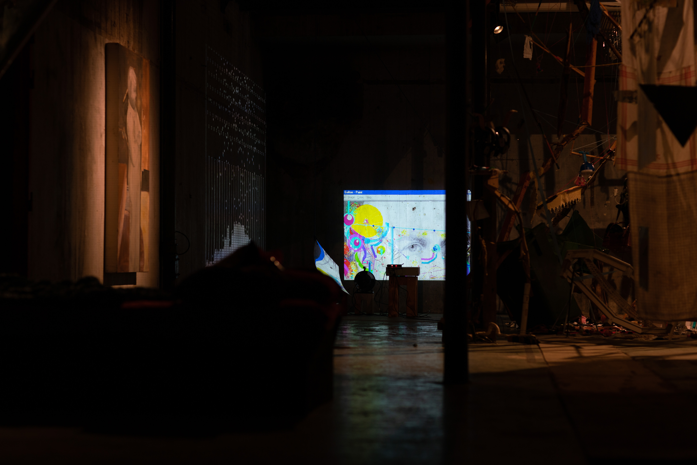
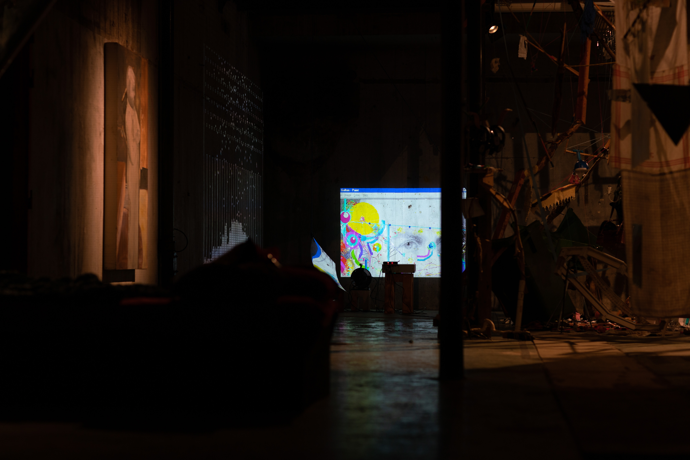

Eugenesis
yet we consider it a sickness to be slow?
 


Eugenesis; a physically simulated model of eugenics on a Galton Board
Sir Francis Galton was a 19th Century English polymath, first cousin of Charles Darwin; and like many of his social class, cannot be said to have been a scholar of any one particular subject: His eclectic work ranges from instructions for correctly boiling tea to empirical research in the effectiveness of prayer.
Among his more enduring legacy is the Galton Board. A statistical toy, where balls fall unpredictably through a matrix of pegs to collect in columns. Curiously, this chaotic bouncing will arrange them in a normal distribution; the famous Bell curve.
However, Sir Galton was also the one who coined the term eugenics: from Greek, for “well growth”: the belief that it is possible to metrically improve a human population through selective breeding, or holocaust.
What happens if we apply eugenics to the Galton Board? As the process results in a normal distribution; commonly found in psychometry, the board could be apt as substitute for a human population. How will it change, if culled?
The board was paired with a timelapse of me drawing over Galton’s portrait in MS Paint, on a virtual install of Win98, limited to 5% CPU; making the process very slow.
Paint is my first memory with computers as a child. I was given an old computer to have in my room, whose hard drive was faulty but was able to boot (with patience).
However, this meant no programs could be installed, and nothing could be saved; whatever I did would exist only in short term memory. To play on it was an act of meditation.
I wanted this parallel as a form of the question, “Would it be better if I was never born?” And have it answered with the love of a child. I loved my computer, no matter how crippled and useless, I made it part of me, and would have mourned it like a friend.